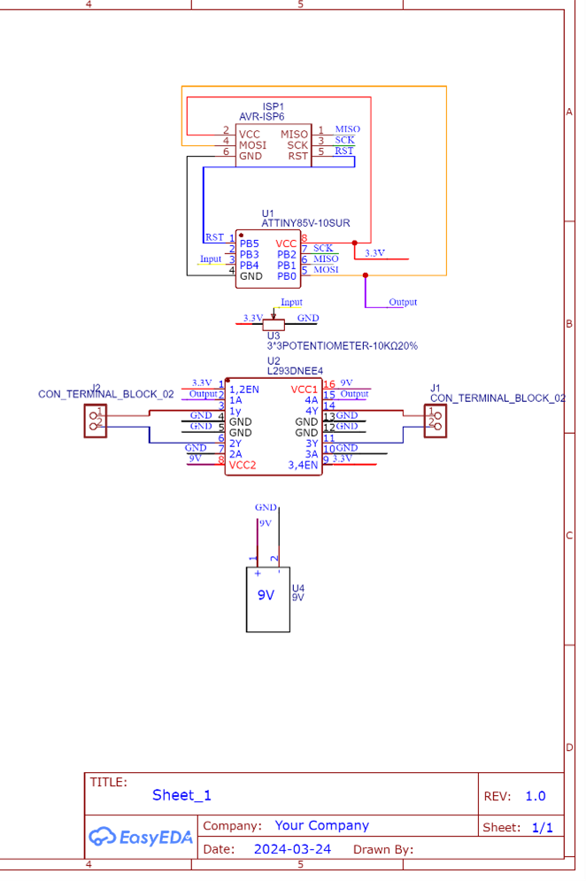

SIP Project: The Hybrid Controller

The Hybrid Controller is my SIP project that combines the analog controls of an Xbox controller with the button layout of an arcade stick. This project required me to apply everything that I learned in my previous semesters to see it to completion, such as CAD modeling and Soldering. This was made to solve the problem of not having a controller that feels comfortable to play fighting games with.
GitHub link

RBT211 Final Project

My final project for RBT211 is meant to be a device with two fans that attach to the edge of your bed to cool off your feet at night when they’re hot. Before making a prototype with a breadboard, I created a schematic for it. Afterwards I used a breadboard to wire up two motors to an H-bridge that hooks up to an AtTiny85 microcontroller that takes analog inputs from a potentiometer.
GitHub link
RBT211 Final Project
My final project for RBT211 is meant to be a device with two fans that attach to the edge of your bed to cool off your feet at night when they're hot. Before making a prototype with a breadboard, I created a schematic for it. Afterwards I used a breadboard to wire up two motors to an H-bridge that hooks up to an AtTiny85 microcontroller that takes analog inputs from a potentiometer.
GitHub link
SIP Project: The Hybrid Controller
The Hybrid Controller is my SIP project that combines the analog controls of an Xbox controller with the button layout of an arcade stick. The project has a Raspberry-PI Pico microcontroller that connects to all of the buttons of the controller and contains a firmware I found online to make it act like a controller when connected to a computer or game console. This was made to solve the problem of not having a controller that feels comfortable to play fighting games with.
GitHub link
CSC230: M5StickC microphone
In CSC230 I was introduced to the M5StickCPlus, a small device that can be programmed using Arduino. One of the assignments using this device had us turning it into a microphone that can take in audio input, as shown by a line moving in response to audio.
GitHub link
CSC230: M5StickC IMU Sensor
In CSC230 I was introduced to the M5StickCPlus, a small device that can be programmed using Arduino. This assignment had us program gyro, acceleration, and vector functionality. The video shows the M5StickCPlus keeping track of its X,Y,Z position as it is dropped onto a pillow.
GitHub link
RBT173 Final: Wireless RC car
This was my final project for RBT173 in which I chose to make a wireless RC car. The car itself is made from a plastic base with a breadboard on top. The breadboard connects an Arduino to two motors (they function as the back wheels) and a nRF24l01 component, which itself wirelessly connects to another Arduino that is wired up to be the car’s controller
GitHub link
 schematic.png)
RBT 211: "LED Visualizer" assignment
This assignment for RBT211 was meant to have us use an Arduino microchip (AtMega328P), 8 LEDs, and a potentiometer to represent 8 bit numbers . However, I heard that it would be more difficult to program a potentiometer controlling the brightness of 1 LED using a smaller microchip called the AtTiny85. The potentiometer is both a resistive and passive transducer, and it is read by the microchip which then sends a current to the LED which makes it shine different brighnesses depending on how much the potentiometer is turned.
GitHub link

RBT173 Final: Wireless RC car
This was my final project for RBT173 in which I chose to make a wireless RC car. The car itself is made from a plastic base with a breadboard on top. The breadboard connects an Arduino to two motors (they function as the back wheels) and a nRF24l01 component, which itself wirelessly connects to another Arduino that is wired up to be the car’s controller. The controller uses two Analog stick components on a breadboard. One analog stick controls the right motor while the other controls the left motor.
GitHub link
CSC230 Final: Snake on a M5StickCPlus
This was my Final project for CSC230. I programmed the old-school snake game into the M5StickCplus. The screen on the M5 is where the snake and food are displayed, and said snake is controlled through a browser on my laptop, which has buttons for up, down, left, and right.
GitHub link
GPE104 Final Project
In Unreal engine 4, it is posible to program an AI character with algorithms and methods to enable autonomy for the character.
in this project, the AI character uses a behavior tree, which is programed with the exact algorithms and methods needed to make it move on it's own.
I used this to program to repeatedly run in a straight line in a random direction before stoping and runing in another staight line in a random direction.
when the AI spots the player character, It will attempt to follow the character and attack him when it gets close enough.
source Code | Itch.io link|
CSC211 Final: Trivia Database
This was the final project for CSC211 - Introduction to Databases. I used SQL to make a database for trivia gameshows. Users can sort through this by the game show's titles, the air date, the network, or even by the people who are hosting the gameshow. Users can also use this database to search through the questions of each game show.
GitHub link